DOCX Word
工程技术报告
按模板写入方法、结果和工程结论。Word 公式可编辑，图表带题注和交叉引用。
Word 排版指南 ↗委托研究的开源技能
按任务书用已有数据建模、计算和绘图。技术报告与项目汇报沿用客户模板，随附复算所需的代码和参数。
v1.3.7安装与使用 ↘
From the brief to the result
可从任务书开始，也可接手已有项目中的数据、计算、图表或文稿。
从任务书找出本次负责的专题，确认要比较的工况、采用的指标及交付范围。
任务书、已有成果和客户模板
待计算的问题和交付清单
A closer look at the numbers
持续多久、哪里受限、怎样取舍？按问题找图，点开后可查看读图要点。每类图都提供中文和英文原图。
24 类图型 · 96 份原图
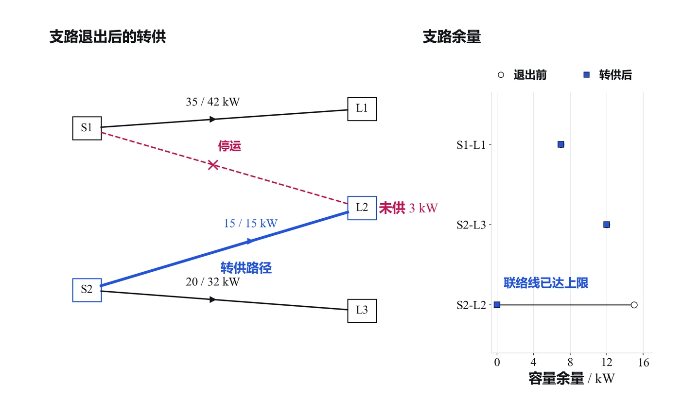
空间与约束
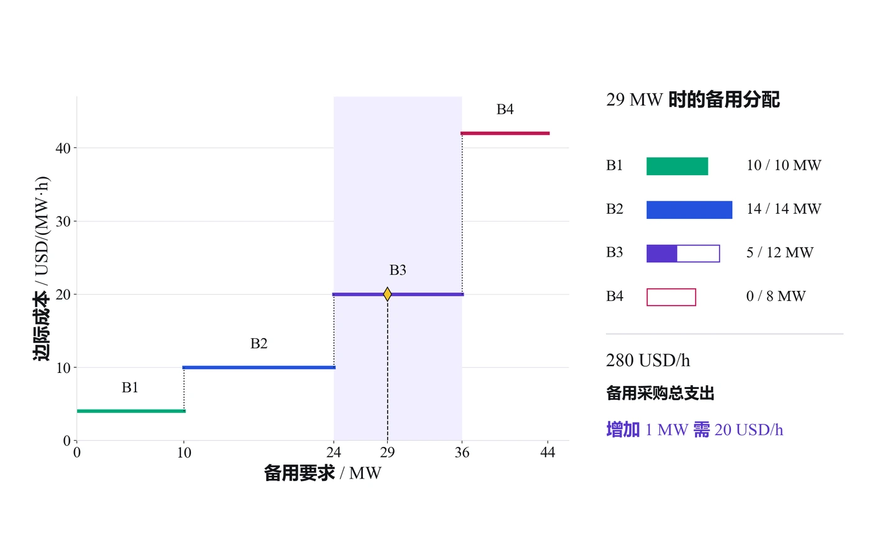
评估对比
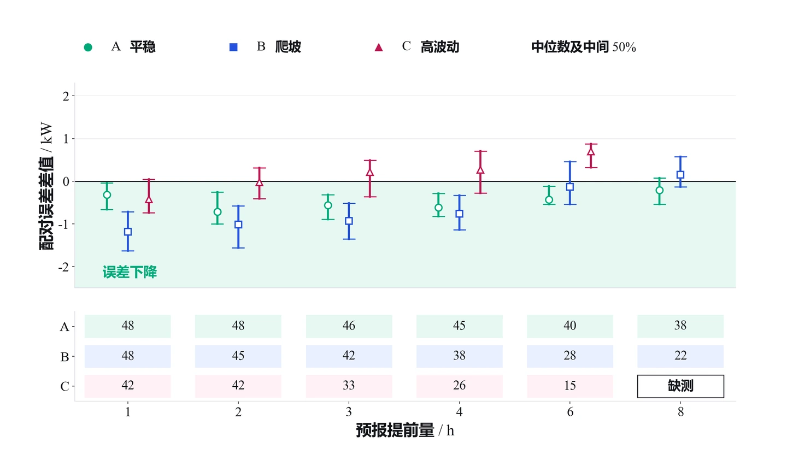
评估对比
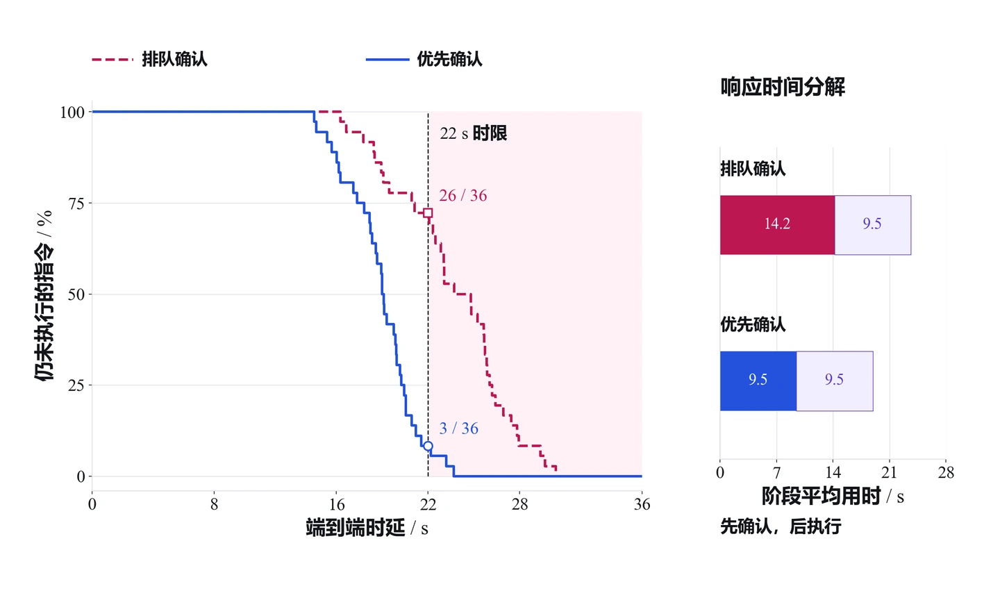
分布比较
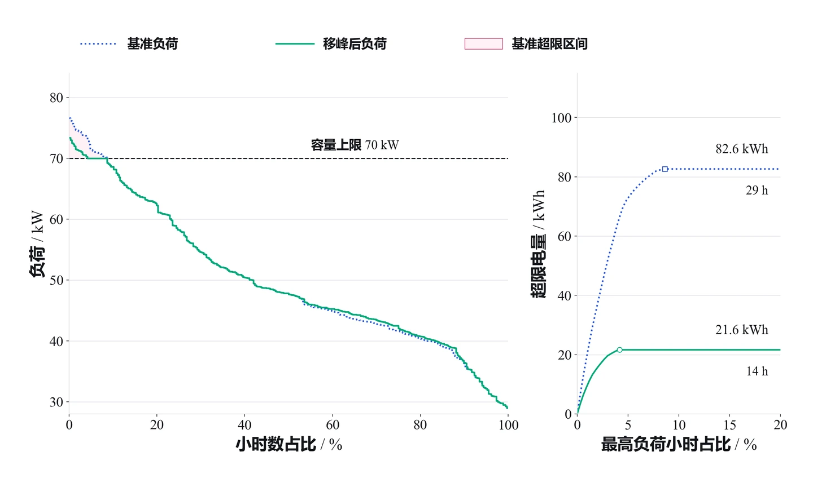
时序与调度
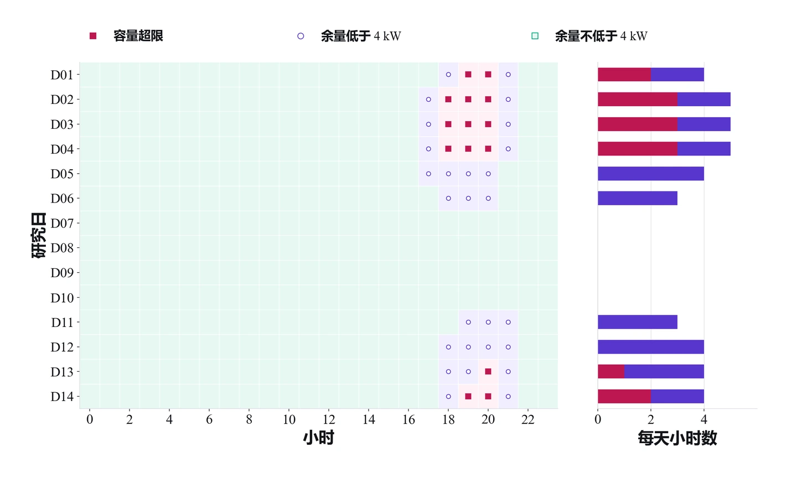
时序与调度
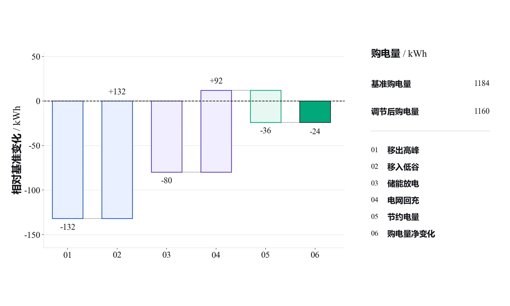
关联与构成
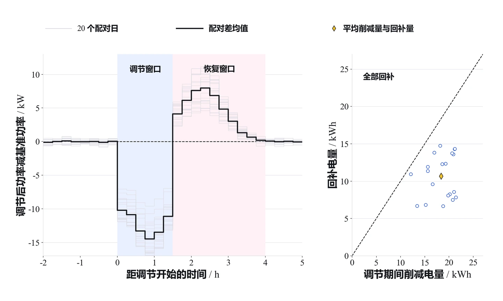
时序与调度
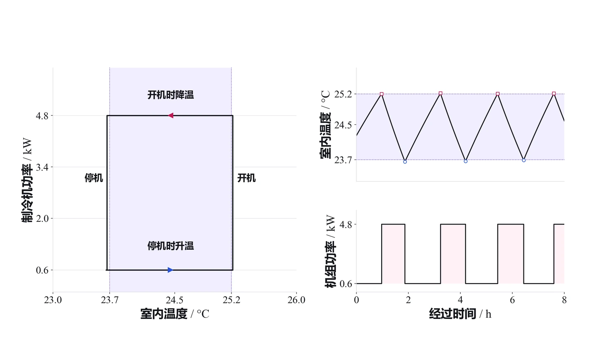
关联与构成
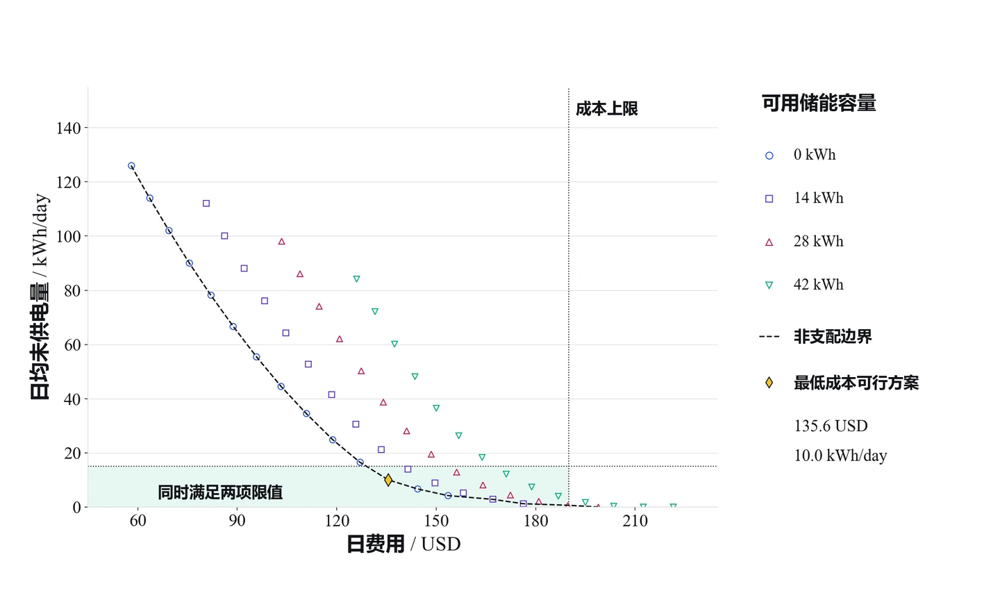
评估对比

时序与调度
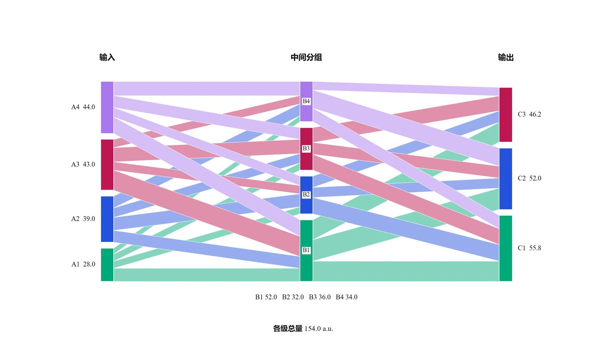
关联与构成
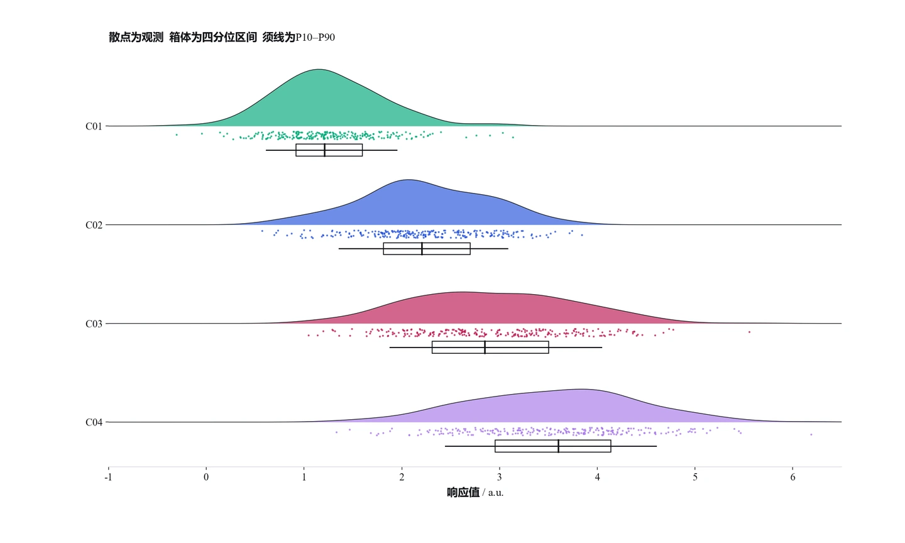
分布比较
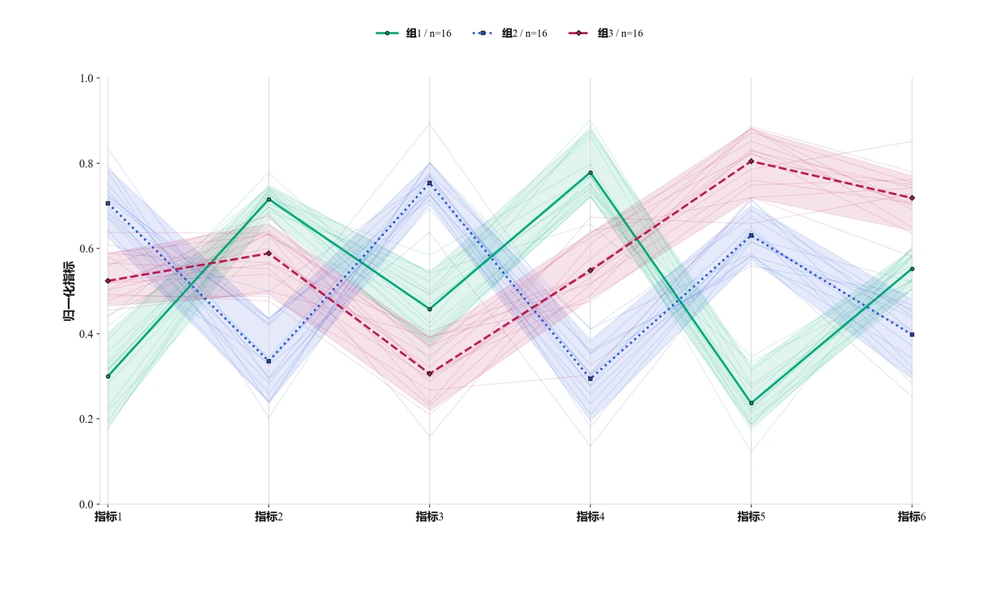
关联与构成

空间与约束

空间与约束
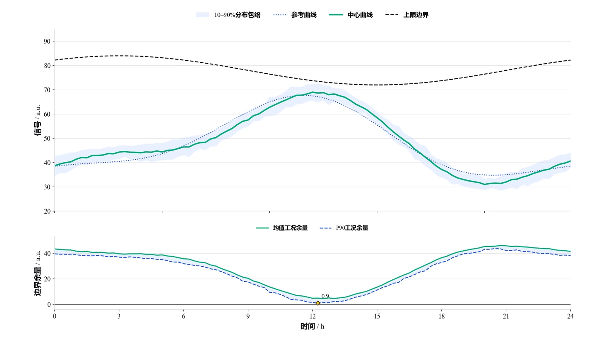
时序与调度

分布比较

关联与构成
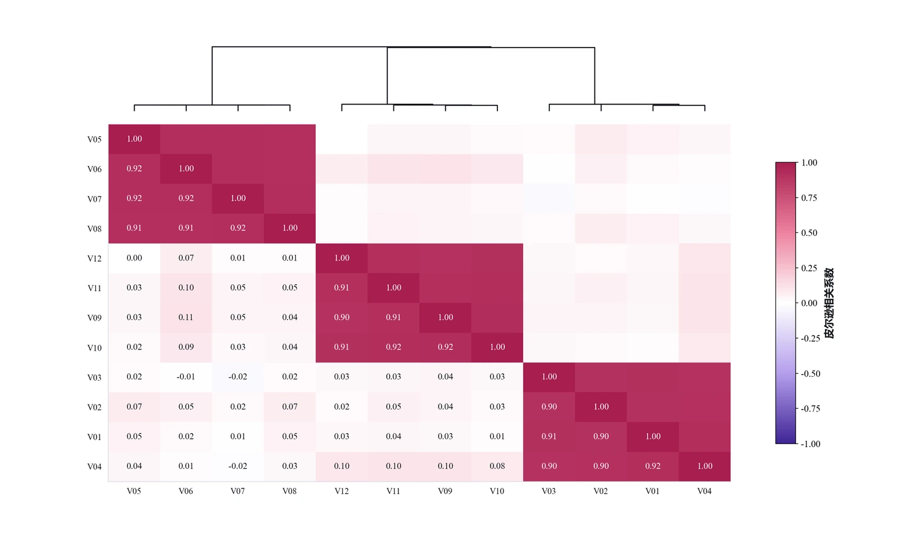
关联与构成
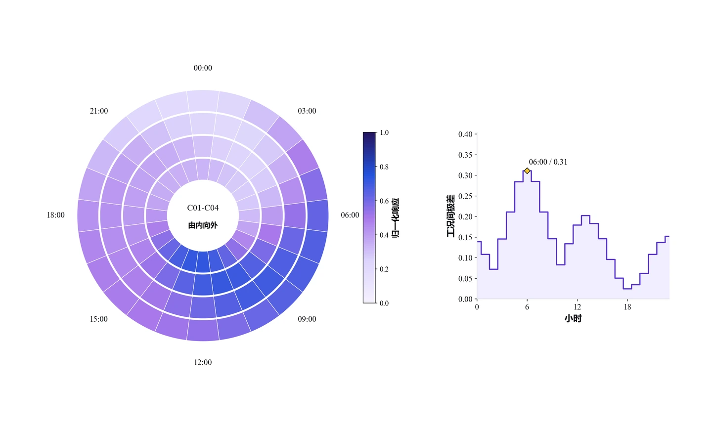
时序与调度

评估对比

时序与调度

评估对比
试试缩短关键词，或者查看全部类别。
图中数据来自独立的合成算例。用自己的数据复绘 ↗
数据说明与绘图源码 ↗Ready for review
按任务书交付报告、汇报和复算所需的文件。
DOCX Word
按模板写入方法、结果和工程结论。Word 公式可编辑，图表带题注和交叉引用。
Word 排版指南 ↗PPTX PowerPoint
按客户模板排版，保留可编辑的文字和图表。原生图表随文件保留其数据工作簿。
汇报制作指南 ↗SOURCE Python / MATLAB
交付输入说明、模型参数、计算脚本和结果表，可重新计算及绘图。
查看工具脚本 ↗Take it to your project
解压后，让研究助手读取 senior-projectx/SKILL.md。提供任务书、数据及客户模板即可开始。
请用 Senior-ProjectX 处理任务书中我负责的部分。用已有数据建模并独立复算，说明哪些工况改变了工程判断。按客户模板整理技术报告，附计算源码。